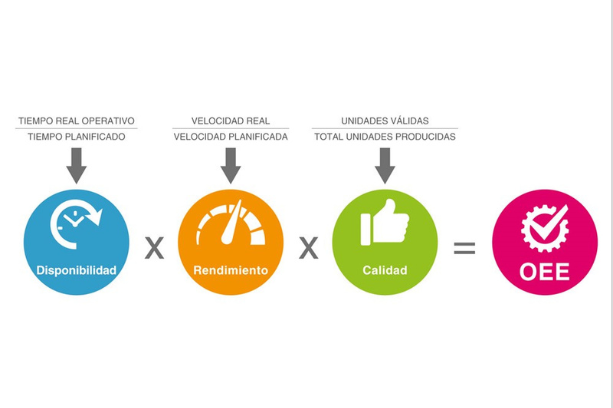

Soluciones

Registro de Datos
This is a wider card with supporting text below as a natural lead-in to additional content. This content is a little bit longer.
Ver mas

Sistema OEE
El Sistema OEE (Overall Equipment Effectiveness) es una métrica de eficiencia utilizada en la manufactura para evaluar el rendimiento de un equipo, máquina o proceso. Calcula la disponibilidad, rendimiento y calidad para identificar pérdidas de producción. Su objetivo es optimizar la eficiencia y mejorar la productividad de la operación.
Ver mas